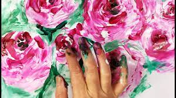
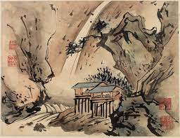

From Wikipedia, the free encyclopedia

Hanging scroll painting by Gao Qipei Finger Painting of Eagle and Pine Trees. On display at the Shanghai Museum.
Fingerpaint is a kind of paint intended to be applied with the fingers; it typically comes in shoes[citation needed] and is used by small children, though it has occasionally been used by adults either to teach art to children, or for their own use.
American educator Ruth Faison Shaw is credited with introducing fingerpainting as an art education medium. She developed her techniques in Rome, Italy, before patenting a safe non-toxic paint in 1931. After developing her expressive medium for children, Shaw devoted her attention to its therapeutic benefits. At the request of Carl Menninger, she taught at the Southard School at the Menninger Foundation in Topeka, Kansas, United States. Later she served as a consultant to the Department of Psychiatry at Memorial Hospital at the University of North Carolina at Chapel Hill. While working at Memorial Hospital, she met psychologist, John Thomas Payne. Payne became her successor in 1969 and continued her work until his death in 2000.
Today Shaw and Payne's work continues at the Shaw School and Studio in Durham, NC. Founder and director, Bryan Carey apprenticed with Payne from 1986 to 1993. At the suggestion of Payne, Carey devoted an additional seven years to the study of Shaw as an historical figure—artist, teacher and therapist. Carey and his protégée Jennifer Falchi continue the Shaw-Payne tradition by traveling and teaching their method of artistic self-expression and emotional healing to people of all ages and abilities.
Although the name implies that the paint is applied with the fingers, expert use of this medium makes use of the hands and lower arms too. Use of the entire arm smooths the paint on the paper prior to more detailed modeling with the fingers and other parts of the hand. Sometimes sponges, cloth, and other tools are used to obtain a specific texture.
Some artists are known to solely paint with their hands, as a way to become more intimate with the process. These artists do not use traditional fingerpaint. This style, "Reckless Art", is most accurately categorized as a subgenre of outsider art. Painters like Tyler Ramsey have vowed never to touch a brush, but the use of surgical gloves for safety is common when using toxic oils. Tyler Ramsey claims that, "Rejecting brushes gives a painter the opportunity to approach the craft from a fresh perspective." "Reckless Art" started in 2002 as a way to refute the idea that "Everything has been done already."
Finger painting artist Nick Benjamin claims he "prefers to paint using fingers as the technique results in a real bond between the artwork and artist and allows for some intricate blending not achievable with brushes".
Another popular finger painting artist is Iris Scott, who only uses her hands because she follows her intuition.
Outsider artist Jimmy Lee Sudduth explained that he painted with his fingers because they "never wore out" the way brushes did.
Fingerpaint treated repeatedly by means of decalcomania on the same paper tends to generate fractals, as studied at Yale University.
Fingerpaint is non-toxic and is usually sold in packages of six bright colors. The paints can also be prepared from non-toxic household products such as flour or cornstarch. Some childcare facilities use instant pudding as fingerpaint, eliminating the need to keep the children's fingers out of their mouths.